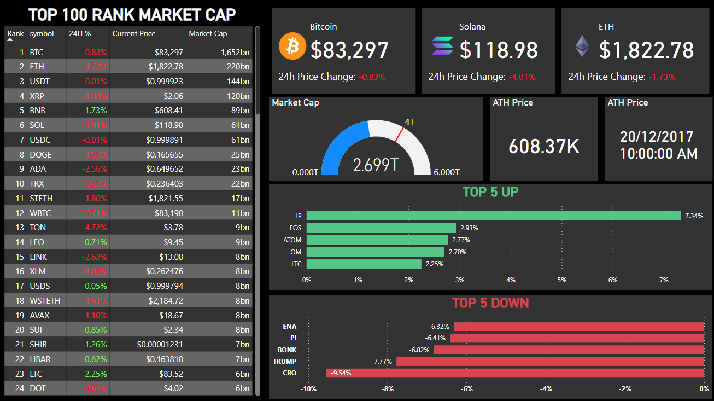

📊 Crypto Portfolio Dashboard
This dashboard was developed in Power BI to provide a clear and dynamic view of the
cryptocurrency market. The data was retrieved using the public API from CoinGecko, ensuring
real-time updates with the latest information on prices, volumes, and market caps.
🧩 Technologies and Tools Used
- Power BI Desktop for data modeling and visualization
- Power Query for data transformation
- CoinGecko API for live cryptocurrency data
📑 Data Overview
The dataset contains key information for the top cryptocurrencies, including:
- Symbol: Crypto ticker (e.g., BTC, ETH)
- Name: Full name of the cryptocurrency
- 24h Price Change %: Daily variation in price
- Current Price: Real-time market price in USD
- Market Cap: Total market capitalization
- Rank: Position based on market cap
- All Time High (ATH): Historical highest price
- Image: Coin logos used for visual representation
📈 Dashboard Features
- Overview cards for major coins (BTC, ETH, SOL)
- Market cap gauge visualization
- Top 5 gainers and losers bar charts
- Interactive filters to explore symbol, price, and rank
🌐 Real-World Applications
This type of dashboard can be useful for both investors and analysts who need a quick, insightful overview
of the crypto market. Use cases include:
- Tracking portfolio performance for retail or institutional investors
- Monitoring market volatility in real-time
- Identifying short-term opportunities (top gainers/losers)
- Integrating with other BI tools for financial reporting
🖼️ Screenshot from Power BI
Below is a direct screenshot from the Power BI development environment, showing the data modeling and field
setup during the creation of this dashboard:

📎 Download Full Report (PDF)